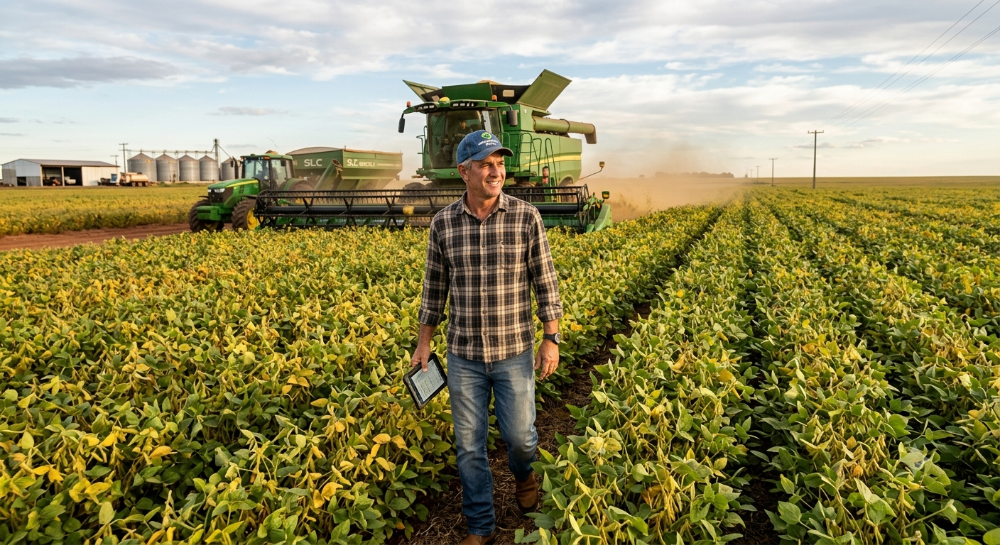

A importância do Agronegócio
Olá você sabe o que e agronegócio?
A importância do Agronegócio
O que é o agronegócio? O agronegócio é o conjunto de atividades relacionadas à produção, processamento, transporte e comercialização de produtos de origem agrícola e pecuária. Ele envolve muito mais do que o trabalho no campo, abrangendo também empresas de máquinas agrícolas, fertilizantes, sementes, transporte, armazenamento, indústrias alimentícias, exportação e comércio.
A importância do agronegócio O agronegócio desempenha um papel essencial na sociedade. Ele garante a produção de alimentos, fibras e matérias-primas utilizadas em diversos setores industriais. Entre suas principais contribuições estão:Produção de alimentos, geração de empregos, desenvolvimento econômico, exportações, inovação tecnológica, sustentação de pequenas e grandes propriedades rurais.
Principais produtos do agronegócio brasileiro O Brasil produz uma grande variedade de produtos agrícolas e pecuários. Entre os principais estão: soja, milho, café, cana-de-açúcar, algodão, arroz, feijão, trigo, carne bovina, carne de frango, carne suína, leite, frutas. Esses produtos abastecem tanto o mercado nacional quanto o internacional.
Economia O agronegócio é um dos principais responsáveis pelo crescimento da economia brasileira. O setor movimenta bilhões de reais todos os anos e contribui significativamente para o Produto Interno Bruto (PIB) do país. Além disso, gera milhões de empregos diretos e indiretos, desde a produção no campo até as atividades de transporte, indústria, comércio e exportação.
Tecnologia A tecnologia tem desempenhado um papel fundamental no desenvolvimento do agronegócio. Atualmente, produtores rurais utilizam drones para monitorar plantações, tratores equipados com GPS, sensores para analisar o solo, irrigação automatizada, softwares de gestão, inteligência artificial e agricultura de precisão. Essas ferramentas ajudam a reduzir desperdícios, aumentar a produtividade, melhorar a qualidade dos produtos e diminuir os impactos ambientais.
Agricultura A agricultura é uma das principais atividades do agronegócio e consiste no cultivo de plantas destinadas à alimentação, à produção de fibras e de matérias-primas industriais. No Brasil, destacam-se a agricultura familiar, responsável por boa parte dos alimentos consumidos pela população, e a agricultura comercial, voltada principalmente para grandes produções e exportações.
Pecuária A pecuária é outra atividade importante do agronegócio. Ela envolve a criação de bovinos, suínos, aves, ovinos e caprinos para a produção de carne, leite, ovos, couro e outros derivados. O Brasil possui um dos maiores rebanhos bovinos do mundo e ocupa posição de destaque na exportação de carnes.